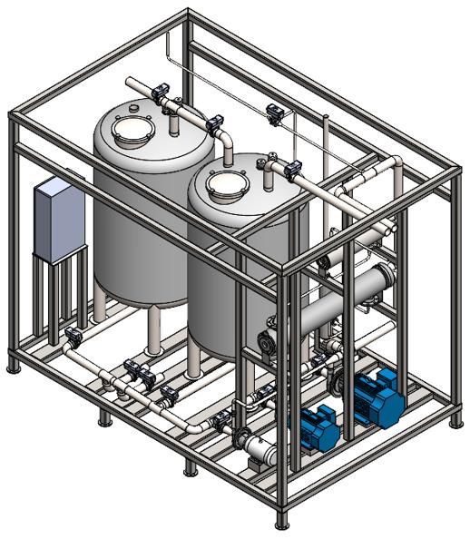

Fluor CIP Skid
The goal of this project was to a design a Clean-In-Place Skid system to specifications laid out by the Fluor Corporation. I worked closely with a team of seven other mechanical engineering students to produce both a conceptual design and a prototype design. Most of my work was on the conceptual design, focusing on CAD modeling, thermodynamic calculations, and component research. The design we submitted came in second at a showcase for five different teams from different schools also doing the same project, only barely behind one other team from Clemson.

Conceptual Design
Our conceptual system was required to comply with all FDA and ASME standards while being a CIP system that could be feasibly implemented in a factory. We focused on versatility, with the intent that the system could be used across a wide variety of factories. As such, we utilised a three pump system to maintain efficient performace across a range of flow rates without exceeding the optimal operating ranges for any one pump. Both the rinse tank and recovery tanks were 1000 gallons to allow for the cleaning of large systems. We were given steam as a system inpit so to improve the system's efficiency, we chose to use two heat exchangers. One heat exchanger acted as the primary heat exchanger, utilizing the energy from the first phase change of the steam to heat the working fluid. The then condensed steam then passed through a steam trap to cause a pressure drop, and then through a secondary heat exchanger to extract the energy from an additional phase change. This allowed us to fully raise the temperature of the working fluid in fewer total cycles, at the price of a higher system cost. Control would be performed by a PLC, as with many other CIP systems.
Prototype Design
Our prototype design was meant to mimic out conceptual design, without meeting the rigorous requirements for real pharmaceutical CIP systems To replace the conceptual dual pump system, we used a set of flow limiter valves that we could switch between, mimicing the range of flow rates enabled by having multiple pumps. Electric heat exchangers were used rather than steam, since steam was not available for the prototypes. This mimiced the two heat exchanger system used in our conceptual design. A transformer was used to account for the voltage differences between the heat exchangers and the rest of the system. A PLC controlled the entire system, autonomously operating all valves and relays necessary to run a complete cycle. Our design successfully achieved two flow rates and raised the temperature of the input water by about five degrees Farenheit.